- Generated by
 1.13.2
1.13.2
|
fitpack
Modern Fortran library for curve and surface fitting with splines
|
C interface to fitpack_parametric_surface. More...
Data Types | |
| interface | f_associated |
| Pointer-identity check (Fortran-side wrapper of the bind(C) function). More... | |
| interface | f_pointer |
| Get pointer to embedded Fortran object. More... | |
| interface | fitpack_parametric_surface_c |
| Construct from Fortran object. More... | |
Functions/Subroutines | |
| logical(c_bool) function, public | fitpack_parametric_surface_c_is_same (this, that) |
| Pointer-identity check: true iff both wrappers point to the same underlying Fortran object (and that object is allocated). | |
| type(fitpack_parametric_surface) function, pointer | fitpack_parametric_surface_c_get_pointer (this) |
| Get pointer to embedded Fortran object (non-allocating) | |
| logical function | fitpack_parametric_surface_c_pointer (this, fthis) |
| Get/allocate embedded Fortran object (internal, not bind(C)) Returns .true. on success, .false. on allocation failure. | |
| subroutine, public | fitpack_parametric_surface_c_allocate (this, status) |
| [bind(C)] Allocate new object | |
| subroutine, public | fitpack_parametric_surface_c_destroy (this, status) |
| [bind(C)] Deallocate object | |
| subroutine, public | fitpack_parametric_surface_c_copy (this, that, deep_copy, status) |
| [bind(C)] Copy. By default, mirrors source ownership: a view source yields a view (shallow handle copy); an owned source yields a deep copy via Fortran intrinsic assignment. Pass deep_copy=.true. to force a deep copy regardless of the source's ownership. | |
| subroutine, public | fitpack_parametric_surface_c_associate (this, that, status) |
| [bind(C)] Shallow copy (pointer semantics — Fortran "associate" construct) | |
| subroutine, public | fitpack_parametric_surface_c_move_alloc (to, from, status) |
| [bind(C)] Move allocation (transfer ownership) | |
| type(fitpack_parametric_surface_c) function | fitpack_parametric_surface_c_f2c (f) |
| Create from Fortran object (owns copy) | |
| type(fitpack_parametric_surface_c) function | fitpack_parametric_surface_c_fptr2c (f, want_pointer) |
| Create from Fortran object (optionally as pointer) | |
| integer(c_int32_t) function, public | fitpack_parametric_surface_c_interpolate (this, reset_knots) |
| interpolate | |
| integer(c_int32_t) function, public | fitpack_parametric_surface_c_comm_size (this) |
| comm_size | |
| real(c_double) function, public | fitpack_parametric_surface_c_mse (this) |
| mse | |
| integer(c_int32_t) function, public | fitpack_parametric_surface_c_core_comm_size (this) |
| core_comm_size | |
| subroutine, public | fitpack_parametric_surface_c_destroy_base (this) |
| destroy_base | |
| integer(c_int32_t) function, public | fitpack_parametric_surface_c_fit (this, smoothing, n, periodic, keep_knots) |
| fit | |
| integer(c_int32_t) function, public | fitpack_parametric_surface_c_least_squares (this, n, u_knots, v_knots, smoothing, reset_knots) |
| least_squares | |
| subroutine, public | fitpack_parametric_surface_c_surf_eval_one (this, u, v, ierr, result, n_result) |
| surf_eval_one | |
| subroutine, public | fitpack_parametric_surface_c_surf_eval_grid (this, n, u, v, ierr, result, n_result) |
| surf_eval_grid | |
| subroutine, public | fitpack_parametric_surface_c_comm_pack (this, n, buffer) |
| comm_pack | |
| subroutine, public | fitpack_parametric_surface_c_comm_expand (this, n, buffer) |
| comm_expand | |
| subroutine, public | fitpack_parametric_surface_c_core_comm_pack (this, n, buffer) |
| core_comm_pack | |
| subroutine, public | fitpack_parametric_surface_c_core_comm_expand (this, n, buffer) |
| core_comm_expand | |
| subroutine, public | fitpack_parametric_surface_c_getcomp_u (this, ptr, extents) |
Raw view of component 'u': address of the first element, plus the component's 1 extent(s). Null pointer and zero extents when the object or the component is unallocated; an allocated but zero-sized component still reports its true shape, but has no representable address. Symbol uses the getcomp_ infix (not get_) so it can never collide with a type-bound procedure named get_<component>. | |
| subroutine, public | fitpack_parametric_surface_c_getcomp_v (this, ptr, extents) |
Raw view of component 'v': address of the first element, plus the component's 1 extent(s). Null pointer and zero extents when the object or the component is unallocated; an allocated but zero-sized component still reports its true shape, but has no representable address. Symbol uses the getcomp_ infix (not get_) so it can never collide with a type-bound procedure named get_<component>. | |
| subroutine, public | fitpack_parametric_surface_c_getcomp_z (this, ptr, extents) |
Raw view of component 'z': address of the first element, plus the component's 3 extent(s). Null pointer and zero extents when the object or the component is unallocated; an allocated but zero-sized component still reports its true shape, but has no representable address. Symbol uses the getcomp_ infix (not get_) so it can never collide with a type-bound procedure named get_<component>. | |
| subroutine, public | fitpack_parametric_surface_c_getcomp_t (this, ptr, extents) |
Raw view of component 't': address of the first element, plus the component's 2 extent(s). Null pointer and zero extents when the object or the component is unallocated; an allocated but zero-sized component still reports its true shape, but has no representable address. Symbol uses the getcomp_ infix (not get_) so it can never collide with a type-bound procedure named get_<component>. | |
| type(c_ptr) function, public | fitpack_parametric_surface_c_ref_idim (this) |
| Get pointer to scalar property 'idim'. | |
| type(c_ptr) function, public | fitpack_parametric_surface_c_ref_nmax (this) |
| Get pointer to scalar property 'nmax'. | |
C interface to fitpack_parametric_surface.
| subroutine, public fitpack_parametric_surfaces_c::fitpack_parametric_surface_c_allocate | ( | type(fitpack_parametric_surface_c), intent(inout) | this, |
| type(fx_status), intent(out), optional | status ) |
[bind(C)] Allocate new object
| status | Optional. If absent, allocation failure triggers error stop. |
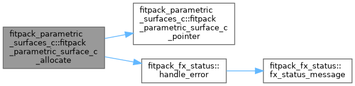
| subroutine, public fitpack_parametric_surfaces_c::fitpack_parametric_surface_c_associate | ( | type(fitpack_parametric_surface_c), intent(inout) | this, |
| type(fitpack_parametric_surface_c), intent(in) | that, | ||
| type(fx_status), intent(out), optional | status ) |
[bind(C)] Shallow copy (pointer semantics — Fortran "associate" construct)
| status | Optional. If absent, errors trigger error stop. |
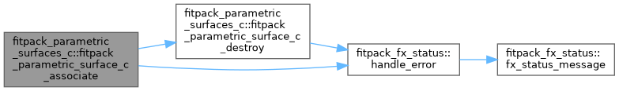
| subroutine, public fitpack_parametric_surfaces_c::fitpack_parametric_surface_c_comm_expand | ( | type(fitpack_parametric_surface_c), intent(inout) | this, |
| integer(c_int32_t), intent(in), value | n, | ||
| real(c_double), dimension(n), intent(in) | buffer ) |
comm_expand
| subroutine, public fitpack_parametric_surfaces_c::fitpack_parametric_surface_c_comm_pack | ( | type(fitpack_parametric_surface_c), intent(inout) | this, |
| integer(c_int32_t), intent(in), value | n, | ||
| real(c_double), dimension(n), intent(inout) | buffer ) |
comm_pack
| integer(c_int32_t) function, public fitpack_parametric_surfaces_c::fitpack_parametric_surface_c_comm_size | ( | type(fitpack_parametric_surface_c), intent(in) | this | ) |
comm_size
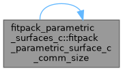
| subroutine, public fitpack_parametric_surfaces_c::fitpack_parametric_surface_c_copy | ( | type(fitpack_parametric_surface_c), intent(inout) | this, |
| type(fitpack_parametric_surface_c), intent(in) | that, | ||
| logical(c_bool), intent(in), value | deep_copy, | ||
| type(fx_status), intent(out), optional | status ) |
[bind(C)] Copy. By default, mirrors source ownership: a view source yields a view (shallow handle copy); an owned source yields a deep copy via Fortran intrinsic assignment. Pass deep_copy=.true. to force a deep copy regardless of the source's ownership.
| deep_copy | When .true., always allocate a fresh Fortran object and deep-copy data, even if the source is a view. |
| status | Optional. If absent, errors trigger error stop. |
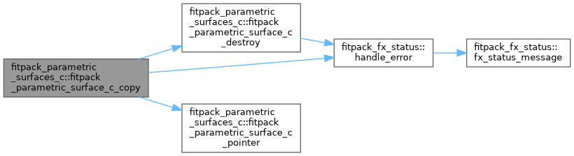
| subroutine, public fitpack_parametric_surfaces_c::fitpack_parametric_surface_c_core_comm_expand | ( | type(fitpack_parametric_surface_c), intent(inout) | this, |
| integer(c_int32_t), intent(in), value | n, | ||
| real(c_double), dimension(n), intent(in) | buffer ) |
core_comm_expand
| subroutine, public fitpack_parametric_surfaces_c::fitpack_parametric_surface_c_core_comm_pack | ( | type(fitpack_parametric_surface_c), intent(inout) | this, |
| integer(c_int32_t), intent(in), value | n, | ||
| real(c_double), dimension(n), intent(inout) | buffer ) |
core_comm_pack
| integer(c_int32_t) function, public fitpack_parametric_surfaces_c::fitpack_parametric_surface_c_core_comm_size | ( | type(fitpack_parametric_surface_c), intent(in) | this | ) |
core_comm_size
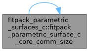
| subroutine, public fitpack_parametric_surfaces_c::fitpack_parametric_surface_c_destroy | ( | type(fitpack_parametric_surface_c), intent(inout) | this, |
| type(fx_status), intent(out), optional | status ) |
[bind(C)] Deallocate object
| status | Optional. If absent, deallocation failure triggers error stop. |
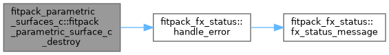
| subroutine, public fitpack_parametric_surfaces_c::fitpack_parametric_surface_c_destroy_base | ( | type(fitpack_parametric_surface_c), intent(inout) | this | ) |
destroy_base
|
private |
Create from Fortran object (owns copy)
| integer(c_int32_t) function, public fitpack_parametric_surfaces_c::fitpack_parametric_surface_c_fit | ( | type(fitpack_parametric_surface_c), intent(in) | this, |
| real(c_double), intent(in), optional | smoothing, | ||
| integer(c_int32_t), intent(in), value | n, | ||
| logical(c_bool), dimension(n), intent(in), optional | periodic, | ||
| logical(c_bool), intent(in), optional | keep_knots ) |
fit
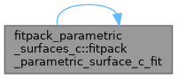
|
private |
Create from Fortran object (optionally as pointer)
|
private |
Get pointer to embedded Fortran object (non-allocating)
| subroutine, public fitpack_parametric_surfaces_c::fitpack_parametric_surface_c_getcomp_t | ( | type(fitpack_parametric_surface_c), intent(in) | this, |
| type(c_ptr), intent(out) | ptr, | ||
| integer(c_int64_t), dimension(2), intent(out) | extents ) |
Raw view of component 't': address of the first element, plus the component's 2 extent(s). Null pointer and zero extents when the object or the component is unallocated; an allocated but zero-sized component still reports its true shape, but has no representable address. Symbol uses the getcomp_ infix (not get_) so it can never collide with a type-bound procedure named get_<component>.
| subroutine, public fitpack_parametric_surfaces_c::fitpack_parametric_surface_c_getcomp_u | ( | type(fitpack_parametric_surface_c), intent(in) | this, |
| type(c_ptr), intent(out) | ptr, | ||
| integer(c_int64_t), dimension(1), intent(out) | extents ) |
Raw view of component 'u': address of the first element, plus the component's 1 extent(s). Null pointer and zero extents when the object or the component is unallocated; an allocated but zero-sized component still reports its true shape, but has no representable address. Symbol uses the getcomp_ infix (not get_) so it can never collide with a type-bound procedure named get_<component>.
| subroutine, public fitpack_parametric_surfaces_c::fitpack_parametric_surface_c_getcomp_v | ( | type(fitpack_parametric_surface_c), intent(in) | this, |
| type(c_ptr), intent(out) | ptr, | ||
| integer(c_int64_t), dimension(1), intent(out) | extents ) |
Raw view of component 'v': address of the first element, plus the component's 1 extent(s). Null pointer and zero extents when the object or the component is unallocated; an allocated but zero-sized component still reports its true shape, but has no representable address. Symbol uses the getcomp_ infix (not get_) so it can never collide with a type-bound procedure named get_<component>.
| subroutine, public fitpack_parametric_surfaces_c::fitpack_parametric_surface_c_getcomp_z | ( | type(fitpack_parametric_surface_c), intent(in) | this, |
| type(c_ptr), intent(out) | ptr, | ||
| integer(c_int64_t), dimension(3), intent(out) | extents ) |
Raw view of component 'z': address of the first element, plus the component's 3 extent(s). Null pointer and zero extents when the object or the component is unallocated; an allocated but zero-sized component still reports its true shape, but has no representable address. Symbol uses the getcomp_ infix (not get_) so it can never collide with a type-bound procedure named get_<component>.
| integer(c_int32_t) function, public fitpack_parametric_surfaces_c::fitpack_parametric_surface_c_interpolate | ( | type(fitpack_parametric_surface_c), intent(in) | this, |
| logical(c_bool), intent(in), optional | reset_knots ) |
interpolate
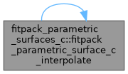
| logical(c_bool) function, public fitpack_parametric_surfaces_c::fitpack_parametric_surface_c_is_same | ( | type(fitpack_parametric_surface_c), intent(in) | this, |
| type(fitpack_parametric_surface_c), intent(in) | that ) |
Pointer-identity check: true iff both wrappers point to the same underlying Fortran object (and that object is allocated).
| integer(c_int32_t) function, public fitpack_parametric_surfaces_c::fitpack_parametric_surface_c_least_squares | ( | type(fitpack_parametric_surface_c), intent(in) | this, |
| integer(c_int32_t), intent(in), value | n, | ||
| real(c_double), dimension(n), intent(in), optional | u_knots, | ||
| real(c_double), dimension(n), intent(in), optional | v_knots, | ||
| real(c_double), intent(in), optional | smoothing, | ||
| logical(c_bool), intent(in), optional | reset_knots ) |
least_squares
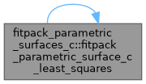
| subroutine, public fitpack_parametric_surfaces_c::fitpack_parametric_surface_c_move_alloc | ( | type(fitpack_parametric_surface_c), intent(inout) | to, |
| type(fitpack_parametric_surface_c), intent(inout) | from, | ||
| type(fx_status), intent(out), optional | status ) |
[bind(C)] Move allocation (transfer ownership)
| status | Optional. If absent, errors trigger error stop. |
| real(c_double) function, public fitpack_parametric_surfaces_c::fitpack_parametric_surface_c_mse | ( | type(fitpack_parametric_surface_c), intent(in) | this | ) |
mse
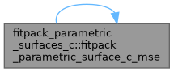
|
private |
Get/allocate embedded Fortran object (internal, not bind(C)) Returns .true. on success, .false. on allocation failure.
| type(c_ptr) function, public fitpack_parametric_surfaces_c::fitpack_parametric_surface_c_ref_idim | ( | type(fitpack_parametric_surface_c), intent(in) | this | ) |
Get pointer to scalar property 'idim'.
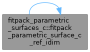
| type(c_ptr) function, public fitpack_parametric_surfaces_c::fitpack_parametric_surface_c_ref_nmax | ( | type(fitpack_parametric_surface_c), intent(in) | this | ) |
Get pointer to scalar property 'nmax'.
| subroutine, public fitpack_parametric_surfaces_c::fitpack_parametric_surface_c_surf_eval_grid | ( | type(fitpack_parametric_surface_c), intent(inout) | this, |
| integer(c_int32_t), intent(in), value | n, | ||
| real(c_double), dimension(n), intent(in) | u, | ||
| real(c_double), dimension(n), intent(in) | v, | ||
| integer(c_int32_t), intent(out), optional | ierr, | ||
| real(c_double), dimension(*), intent(inout) | result, | ||
| integer(c_int32_t), intent(in), value | n_result ) |
surf_eval_grid
| subroutine, public fitpack_parametric_surfaces_c::fitpack_parametric_surface_c_surf_eval_one | ( | type(fitpack_parametric_surface_c), intent(inout) | this, |
| real(c_double), intent(in), value | u, | ||
| real(c_double), intent(in), value | v, | ||
| integer(c_int32_t), intent(out), optional | ierr, | ||
| real(c_double), dimension(*), intent(inout) | result, | ||
| integer(c_int32_t), intent(in), value | n_result ) |
surf_eval_one